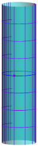

Chapter 52 Line bundles
52.1 Overview
You might have heard about line bundles, which is somehow “a set with a map where the preimage of each point is a line”. And then, in the algebraic geometry section, you come across the concept of “section” which appears to be just a function.
That sounds reasonable, but you may ask, “so what? Isn’t it then just another complex manifold which has one more dimension than ? Why not just study complex manifold?”
It’s true, but there are more structures on a line bundle:
-
•
You can take the product of two line bundles, which somehow “add up the twists” of both line bundles.
-
•
A section is not just a function — you can think of a section as the graph of a function in the special case that the “graph paper” itself is flat, but if it is curved like a Möbius strip, you will see that there is no way to assign a “function value” to each point of the “graph paper” — a situation which we will call “the line bundle is not trivial”.
In other words, a line bundle vastly generalizes the “space of the graph of a function”.
Later on, you will see a deep hidden connection between line bundles and linearly equivalent classes of divisors, and how they are all linked by the so-called Picard group.
52.2 Definition
Let be a Riemann surface.
In this section, we will view as just a curve — that is, a -dimensional object instead of a -dimensional object — because:
-
•
It is easier to visualize things when they can be embedded in -dimensional space. (Try to draw the graph of … with both real and complex part, and you will see what I mean!)
-
•
Since all of our functions of interest are analytic, the behavior of a function elsewhere is determined by its value on the real axis.
Looking only at the real part can makes some intuition slipped however — for example, it is possible to overlook that the circle and the hyperbola cuts out Riemann surfaces in of the same shape, or that the function has a pole at . So, be careful.
Definition 52.2.1.
A line bundle is a set, together with:
-
•
A projection map ,
-
•
An open cover of ,
-
•
For each , a line bundle chart that bijectively maps each point in to a point in ,
-
•
For two open sets and , the transition function must be a -vector space isomorphism restricted to for each point , and the scaling factor must be an analytic function on .
Remark 52.2.2 (Warning) —
Typically, we draw a graph of the function by the set of points where .
This time, we use the notation in [ref:miranda] — the target of a line bundle chart is instead of — so if we consider a section the generalization of a function, the coordinate would look like instead.
The definition is dense, but essentially:
Moral 52.2.3 —
A line bundle is a set with a line bundle structure, consisting of an analytic structure and a -dimensional vector space structure.
The transition maps is simply to weld the pieces of the line bundle together, just like how they welded pieces of a Riemann surface in Chapter 47.
Another definition, we will explain this one later.
Definition 52.2.4 (Sections of a line bundle).
Let be a line bundle. A section on an open set is a map such that is the identity map on .
We call a section a global section.
The section is an analytic section if for every such that there is a line bundle chart , then is analytic.
We will see this definition later on in algebraic geometry, Definition 82.2.2.
Remark 52.2.5 —
In most books, they will first define what a sheaf is, then instead of “analytic section”, they say “a section of the sheaf of analytic functions” (or regular functions, etc.)
52.3 Visualizing a line bundle
Just as how you can keep all the information of the Riemann sphere in your head at once just by visualizing a sphere (with the analytic structure viewed as some “compatible grids” on the surface), you should also be able to keep all the information of a line bundle in your head at once — at least in the simplest cases.
First, we visualize where . Looking at only the real parts, it looks like a plane.
Ψsize(4cm);
Ψdraw((-5, 0)--(5, 0), blue, L=Label("$X$", EndPoint, align=N*1.5+W*0.8));
Ψdraw((0, -5)--(0, 5), Arrow);
As a line bundle, the preimage of each point is a line.
Ψsize(4cm);
Ψdraw((-5, 0)--(5, 0), blue, Arrow, L=Label("$X$", EndPoint, align=N*1.5+W*0.8));
Ψdraw((0, -5)--(0, 5), Arrow);
Ψfor(int i=-4; i<=4; ++i){
ΨΨdraw((i, -5)--(i, 5), purple);
Ψ}
Question 52.3.1
In symbols, what subset of does a vertical line correspond to?
They are not just disparate lines however — there are two more structures. First one is a vector space structure — of course the dimension of as a -vector space is . We can visualize it by marking the points on the line.
Ψsize(4cm);
Ψdraw((-5, 0)--(5, 0), blue, Arrow, L=Label("$X$", EndPoint, align=N*1.5+W*0.8));
Ψdraw((0, -5)--(0, 5), Arrow);
Ψfor(int i=-4; i<=4; ++i){
ΨΨdraw((i, -5)--(i, 5), purple);
ΨΨfor(int j=-4; j<=4; ++j){
ΨΨΨdot((i, j), purple);
ΨΨ}
Ψ}
Ψdotfactor/=2;
The other structure is that the lines must “smoothly varies” as varies over . We visualize this by drawing, well, a grid.
Ψsize(4cm);
Ψdraw((-5, 0)--(5, 0), blue, Arrow, L=Label("$X$", EndPoint, align=N*1.5+W*0.8));
Ψdraw((0, -5)--(0, 5), Arrow);
Ψfor(int i=-4; i<=4; ++i){
ΨΨif(i!=0){
ΨΨΨdraw((i, -4.8)--(i, 4.8), purple);
ΨΨΨdraw((-4.8, i)--(i==1 ? 4.2: 4.8, i), purple);
ΨΨ}
Ψ}
Question 52.3.2
How does the picture of the grid correspond to the formal definition of a line bundle chart? (Hint: take the preimage of the vertical lines and the horizontal lines with respect to the line bundle chart , where , then use the analytic structure on to identify open subsets of with open subsets of .)
So far, nothing surprising — this is just the usual grid graph, where we can draw functions on it like , and a function is analytic if it is analytic with respect to the grid.
Ψsize(4cm);
Ψdraw((-5, 0)--(5, 0), blue, Arrow, L=Label("$X$", EndPoint, align=N*1.5+W*0.8));
Ψdraw((0, -5)--(0, 5), Arrow);
Ψfor(int i=-4; i<=4; ++i){
ΨΨif(i!=0){
ΨΨΨdraw((i, -4.8)--(i, 4.8), purple);
ΨΨΨdraw((-4.8, i)--(i==1 ? 4.2: 4.8, i), purple);
ΨΨ}
Ψ}
Ψdraw(graph(new real(real x){return x^2-1;}, -sqrt(5.8), sqrt(5.8), operator..));
Of course, instead of a function, we call this a section. This particular section is in fact analytic, as you would expect.
Let us take a look at which “grids” represent the same line bundle structure. For this part, we will look at , its real part being .
Ψsize(4cm);
Ψdraw((1, 0)--(5, 0));
Ψlabel("$1$", (1, 0), align=SW);
Ψlabel("$5$", (5, 0), align=SW);
Ψfor(int x=1; x<=5; ++x){
ΨΨdraw((x, -4.2)--(x, 4.2), purple);
Ψ}
Ψfor(int y=-4; y<=4; ++y) if(y!=0){
ΨΨdraw((1-0.2, y)--(5.2, y), purple);
Ψ}
Ψopendot((1, 0));
Ψopendot((5, 0));
If we apply an analytic reparametrization on the segment — for example let , then the grid becomes like the following. It still represents the same line bundle structure — in other words, the two charts are compatible.
Ψsize(4cm);
Ψdraw((1, 0)--(5, 0));
Ψlabel("$1$", (1, 0), align=SW);
Ψlabel("$5$", (5, 0), align=SW);
Ψfor(int x=5; x<=25; ++x){
ΨΨdraw((25/x, -4.2)--(25/x, 4.2), purple);
Ψ}
Ψfor(int y=-4; y<=4; ++y) if(y!=0){
ΨΨdraw((1-0.2, y)--(5.2, y), purple);
Ψ}
Ψopendot((1, 0));
Ψopendot((5, 0));
If we rescale the vertical direction by an analytically-varying function, it still represents the same line bundle structure.
Ψsize(4cm);
Ψdraw((1, 0)--(5, 0));
Ψlabel("$1$", (1, 0), align=SW);
Ψlabel("$5$", (5, 0), align=SW);
Ψfor(int x=5; x<=25; ++x){
ΨΨdraw((25/x, -4.2)--(25/x, 4.2), purple);
Ψ}
Ψfor(int y=1; y<=4; ++y) if(y!=0){
ΨΨdraw((1-0.2, y*(1-0.2))--(5.2*4.2/(y*5.2), 4.2), purple);
ΨΨdraw((1-0.2, -y*(1-0.2))--(5.2*4.2/(y*5.2), -4.2), purple);
Ψ}
Ψopendot((1, 0));
Ψopendot((5, 0));
However, if we rescale the vertical direction by something that is not linear, the vector space structure will be changed. The following grid does not represent the same line bundle structure:
Ψsize(4cm);
Ψdraw((1, 0)--(5, 0));
Ψlabel("$1$", (1, 0), align=SW);
Ψlabel("$5$", (5, 0), align=SW);
Ψfor(int x=1; x<=5; ++x){
ΨΨdraw((x, -4.2)--(x, 4.2), purple);
Ψ}
Ψfor(int i=-7; i<=7; ++i) if(i!=0){
var y=abs(i)^0.7*(i<0 ? -1: 1);
ΨΨdraw((1-0.2, y)--(5.2, y), purple);
Ψ}
Ψopendot((1, 0));
Ψopendot((5, 0));
Intuitively, this makes sense — in a vector space, you can add two elements together and get another element — in our case, if such that , we can compute and get another element with . If we rescale the vertical direction non-linearly, the element will be changed.
Finally, don’t forget that still has an analytic structure — even though a section isn’t necessarily a function, we are still able to say when a section is analytic.
Question 52.3.3
Verify that everything explained above matches the formal definition. (This is important! Fuzzy pictures won’t help you to understand the concepts; and if your intuition is incomplete or inaccurate, you will have a lot of trouble understanding the subsequent parts.)
So far, everything just looks like a graph paper, on which a section looks just like a function.111As warned above, “graph coordinate” is written . Let us consider a more complicated space — the Riemann sphere.
Because we are looking at the real part only, so once again, looks like just a circle.
![[Uncaptioned image]](x5.png)
As before, we let and parametrize the points on the surface, with wherever both are defined.
Still, we need two dimensions to embed a circle. So, the real part of may looks something like the following:
The grid lines are drawn, and the origin , is marked with a dot. The vertical lines mark the position , , , , ….
On the opposite side, we may have something like the following. The vertical lines mark the position , , , , ….
![[Uncaptioned image]](x7.png)
Question 52.3.4
Check that, on for any open set that contains neither nor , the two line bundle charts above define the same line bundle structure. (What are the transition functions?)
So, we have the so-called trivial line bundle .
As promised, there are also nontrivial line bundles here.
First, recall from the section above: over any open set that contains neither nor , we can consider another line bundle chart that scales the vertical direction by a factor of , this induces the same line bundle structure on .
Ψsize(4cm);
Ψdraw((-5, 0)--(5, 0), blue, Arrow, L=Label("$z$", EndPoint, align=N*1.5+W*0.8));
Ψdraw((0, -5)--(0, 5), Arrow);
Ψfor(int i=-4; i<=4; ++i){
ΨΨif(i!=0){
ΨΨΨdraw((i, -4.8)--(i, 4.8), purple);
ΨΨ}
Ψ}
Ψfor(int i=1; i<=4; ++i){
ΨΨdraw((-4.8, i)--(i==1 ? 4.2: 4.8, i), purple);
ΨΨdraw((-4.8, -i)--(4.8, -i), purple);
}
Ψfor(int i=1; i<=4; ++i){
ΨΨdraw((-4.8/i, -4.8)--(4.8/i, 4.8), green);
ΨΨdraw((-4.8/i, 4.8)--(4.8/i, -4.8), green);
}
Question 52.3.5
Let and be the line bundle charts corresponding to the purple and green grid, respectively. Verify that if a point satisfies for , then .
Now — note that the trivial line bundle above can be seen as welding the two pieces together, such that the purple line gets welded to the red line for each . There is nothing that restricts us to that specific welding method, however — this time around, we will try to weld the green line to the red line for each .
The thing will look like this. It looks quite complicated, so this time 4 views are shown.
![[Uncaptioned image]](x8.png)
The cylinder this time is only for illustrative purpose. Let us see what is going on.
-
•
First, near the purple and the red point, the graph lines looks like our usual situation.
Note that because , looking from outside, the red coordinate lines will looks flipped.
-
•
On the positive side ( and ), no problem — we just need to squeeze the purple lines closer together — as depicted in the figure.
-
•
On the negative side, however — note that the green line moves downwards when increases, so we will need to “twist the graph paper” for it to go up.
In the figure, this is depicted as a singularity where all the horizontal lines intersect, but in reality, you should think of it as we twisting the “graph paper” by 180 degrees and weld it to the other part.
This is a Möbius strip!
Thus, it appears to be obvious that this line bundle is not isomorphic to the trivial one, whatever “isomorphic” might mean.
Question 52.3.6
Check that what we did above makes sense when , and are not real — in particular, is a connected set, unlike . You probably won’t be able to visualize the “graph paper” this time (it is -dimensional!), so you will have to keep your intuition confined in the real part and use algebra for the rest.
52.4 Morphisms between line bundles
In order to formally define what it means for two line bundles to be isomorphic, we need to be able to define morphisms. It is exactly what you expect — it must respect the line bundle structure (that is, the vector space structure and the analytic structure) on and .
Definition 52.4.1.
Let and be line bundles. A line bundle morphism is a set morphism such that:
-
•
, and
-
•
if and are line bundle charts, then the composition
has the form where is analytic on .
Exercise 52.4.2
The function above must be nonzero for all . Why? (Hint: invert the function by swapping the role of and .)
Question 52.4.3
Check that the above definition is the equivalent to the following: is a line bundle morphism if and only if
-
•
it maps a point to some point (that is, each fiber gets mapped to the corresponding fiber), and
-
•
for every analytic section on open set , then is an analytic section .
Example 52.4.4
Let . Then by is a line bundle homomorphism.
This line bundle homomorphism is not an isomorphism, because every point gets mapped to .
The definition of line bundle isomorphism is what you would expect.
Definition 52.4.5 (Isomorphism of line bundles).
Two line bundles and are isomorphic if there are line bundle isomorphisms and that are inverse of each other.